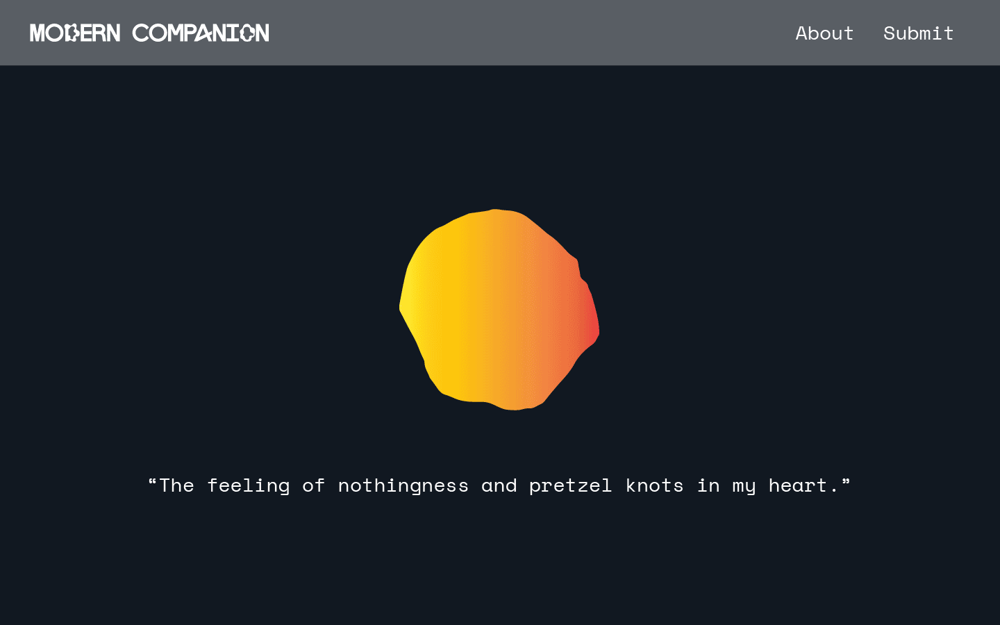
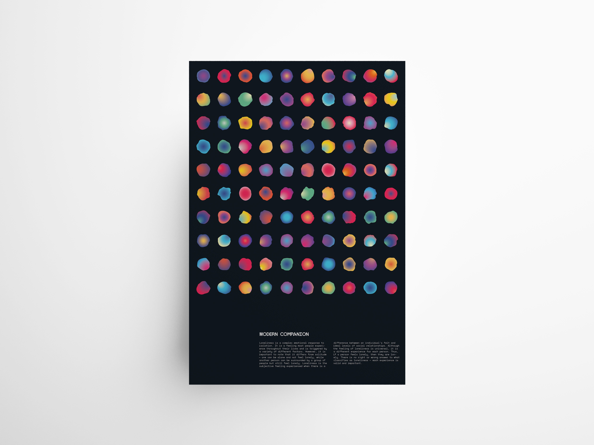

Background
It is paradoxical that in a time where we are more connected than ever, we are also lonelier than ever recorded. With loneliness being a pervasive issue in the modern era, there is still a social stigma attached to it. To gain a better of understanding of my topic, I created a survey and observed the data. From the data colleceted, a significant portion of the survey participants experienced or is experiencing loneliness, showing that loneliness is indeed prevalent in this age
In addition, I asked the participants to describe in their own words what loneliness means to them, in addition to what they do to allievate the feeling. A variety of different answers were received.
Singular circle that is the DNA for the numerous of different blobs
Concept: The main objective of my thesis was raise awareness on the ever present issue of loneliness in the modern day while helping eliminate the stigma around it. In order to do so, I wanted to elevate different individual's experiences on loneliness, encouraging other people to come forth with their experiences. In order to eliminate the stigma surrounding loneliness, more conversations need to take place with more people sharing their experiences.
In order to individualize each experience, I turned to processing, generating 100 different blob shapes based on the same circle. This speaks to the definition of loneliness. While it is a universal experience, each individual experience is different, making it a subjective feeling. There isn't a wrong or right answer to what classifies as loneliness.
Books


In addition, I also wanted to create an immersive and interactive experience that will shine light on topics that aren't often talked about. I thought about how I could highlight hidden feelings that people around, near and far, may also experience but are too afraid to come out due to stigma and fear of being further ostracized.
In order to achieve that, I created three VR experiences based on three statistics about loneliness. I decided to create a typographic environment to highlight the diverse experiences on loneliness and have that be the sole focus on the experience.
To read more about the process, view the process book for Modern Companion.